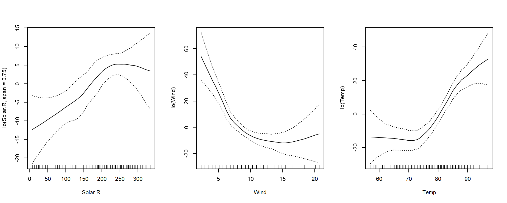

Recall that if there is a non-linear relationship between predictor and response, we can attempt to transform the predictor using a known function (log, reciprocal, polynomial, etc.) to improve the model structure and fit. What if the relationship is more complex and is not well captured with a known function? Generalized additive models may be used in these cases.
There are many techniques and options for selecting the smoothing functions, but for this tutorial, we’ll discuss two: locally weighted error sum of squares (lowess and also commonly abbreviated as loess) and smoothing splines.
Loess
For the theory behind loess smoothing, please read this page on the NIST website. This chapter will focus on implementing loess smoothing in R.
All smoothers have a tuning parameter that controls how smooth the smoother is. The tuning parameter in loess is referred to as the span with larger values producing more smoothness.
From this plot, a span of 0.75 provided too much smoothness, whereas the lower values of span we tested appear to be a better fit. Now let’s apply this to the airqaulity data set from the previous chapter. Initially, we’ll just consider the response(Ozone) and one predictor (Solar.R).
Here we can see that the higher span values appear to provide a better fit. In this case, choosing a low span value would be akin to over fitting a linear model with too high of a degree of polynomial. We can repeat this process to determine appropriate values of span for the other predictors.
Including loess smoothers in a GAM is as simple as including the non-linear terms within lo(). The gam package provides the needed functionality. The script below applies loess smoothers to three of the predictors and displays the model summary (note that the default value for span is 0.5).
Call: gam(formula = Ozone ~ lo(Solar.R, span = 0.75) + lo(Wind) + lo(Temp),
data = airquality, na.action = na.gam.replace)
Deviance Residuals:
Min 1Q Median 3Q Max
-47.076 -9.601 -2.721 8.977 76.583
(Dispersion Parameter for gaussian family taken to be 319.3603)
Null Deviance: 125143.1 on 115 degrees of freedom
Residual Deviance: 33679.85 on 105.4604 degrees of freedom
AIC: 1010.117
Number of Local Scoring Iterations: NA
Anova for Parametric Effects
Df Sum Sq Mean Sq F value Pr(>F)
lo(Solar.R, span = 0.75) 1.00 14248 14248 44.615 1.160e-09 ***
lo(Wind) 1.00 35734 35734 111.894 < 2.2e-16 ***
lo(Temp) 1.00 15042 15042 47.099 4.794e-10 ***
Residuals 105.46 33680 319
---
Signif. codes: 0 '***' 0.001 '**' 0.01 '*' 0.05 '.' 0.1 ' ' 1
Anova for Nonparametric Effects
Npar Df Npar F Pr(F)
(Intercept)
lo(Solar.R, span = 0.75) 1.2 2.9766 0.0804893 .
lo(Wind) 2.8 9.2752 2.617e-05 ***
lo(Temp) 2.5 6.8089 0.0006584 ***
---
Signif. codes: 0 '***' 0.001 '**' 0.01 '*' 0.05 '.' 0.1 ' ' 1
par(mfrow=c(1,3))plot(aq.gam, se=TRUE)

Splines
Spline smoothing can be conceptualized by imagining that your task is to bend a strip of soft metal into a curved shape. One way to do this would be to place pegs on a board (referred to as “knots” in non-linear regression parlance) to control the bends, and then guide the strip of metal over and under the pegs. Mathematically, this is accomplished by combining cubic regression at each knot with calculus to smoothly join the individual bends. The tuning parameter in the smooth.splines function is spar.
Comparing the spline smoother plot to the one generated with loess smoothers, we can see that the two methods essentially accomplish the same thing. It’s just a matter of finding the right amount of smoothness, which can be done through cross validation. The fANCOVA package contains a function loess.aq() that includes a criterion parameter that we can set to gcv for generalized cross validation, which is an approximation for leave-one-out cross-validation Trevor Hastie and Friedman (2008). Applying this function to the airquality data with Solar.R as the predictor and Ozone as the response, we can obtain a cross validated value for span.
Call:
loess(formula = y ~ x, data = data.bind, span = span1, degree = degree,
family = family)
Number of Observations: 111
Equivalent Number of Parameters: 3.09
Residual Standard Error: 29.42
Cross validation is also built in to smooth.spline() and is set to generalized cross validation by default. Instead of specifying spar in the call to smooth.spline(), we just leave it out to invoke cross validation.